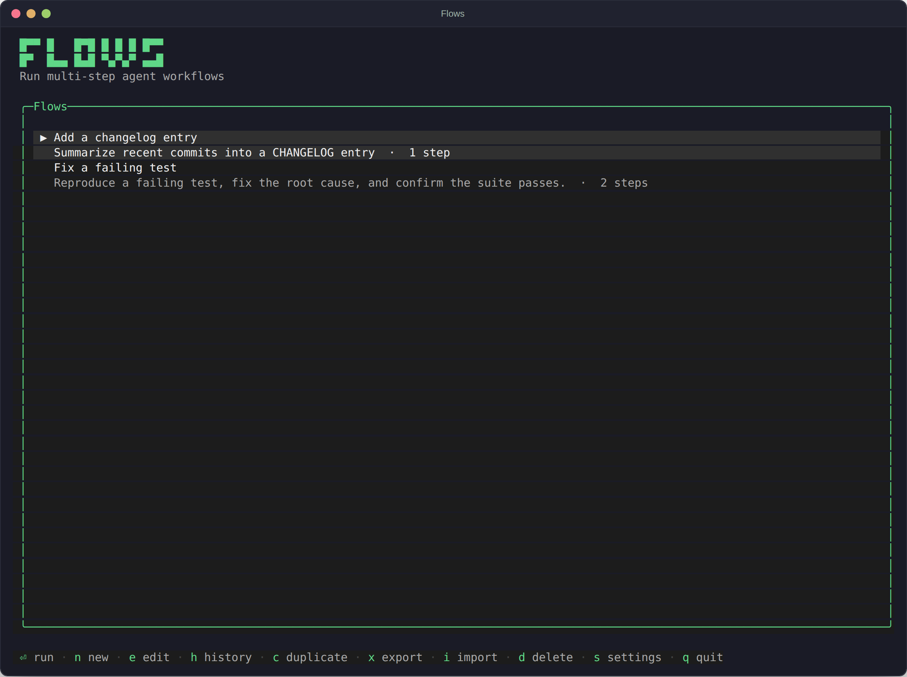
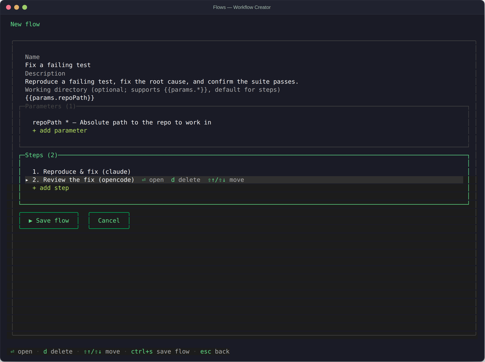
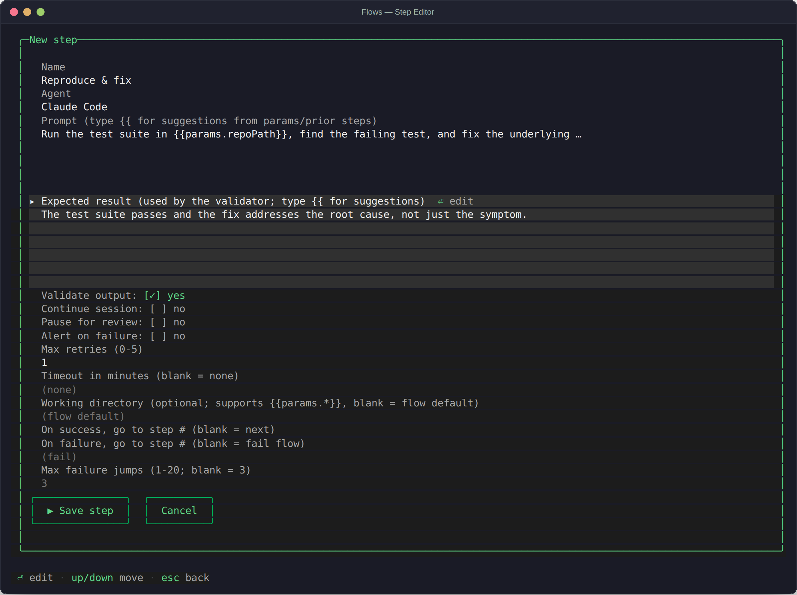
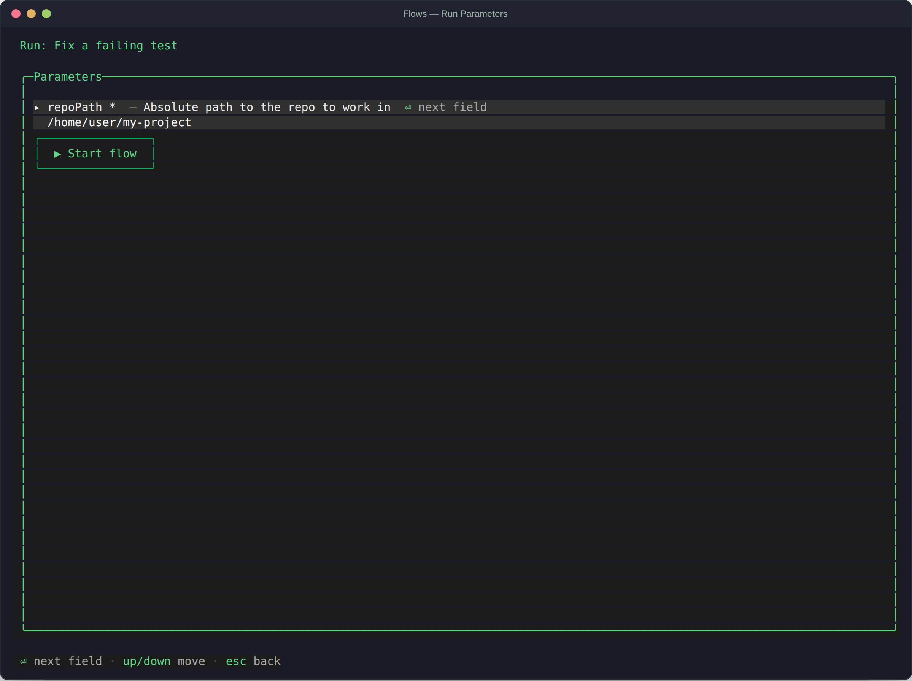
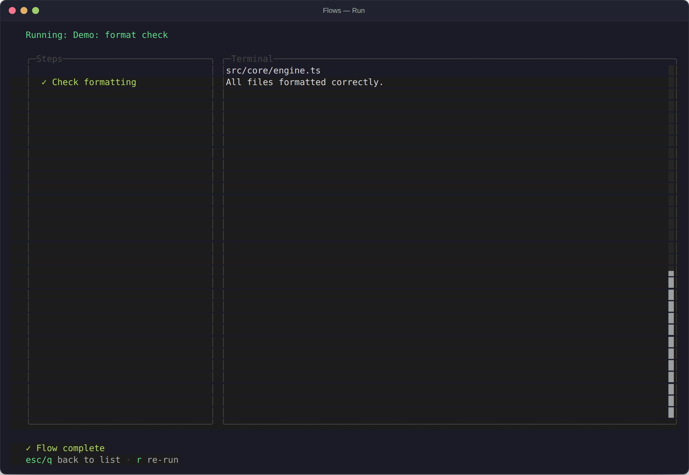
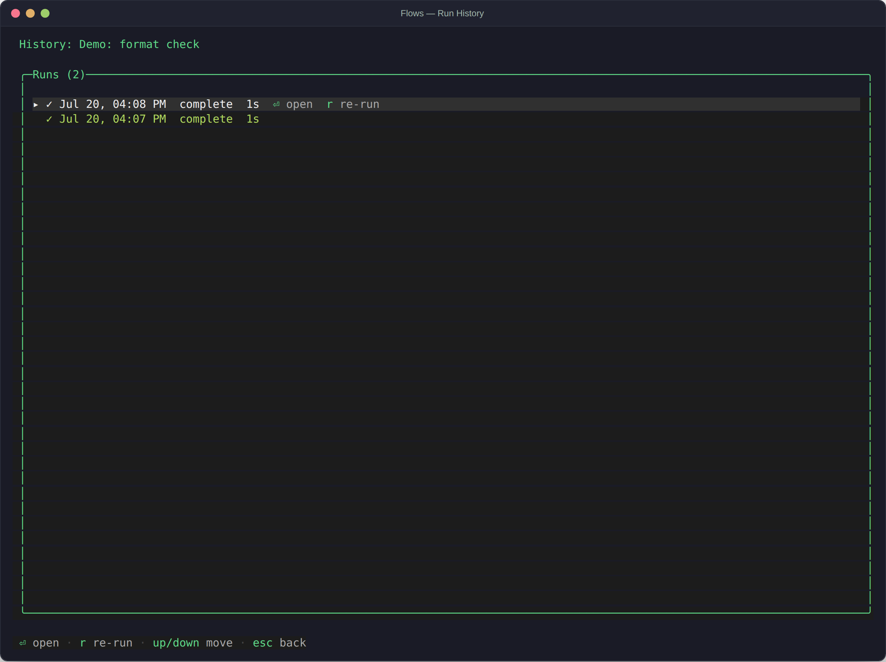
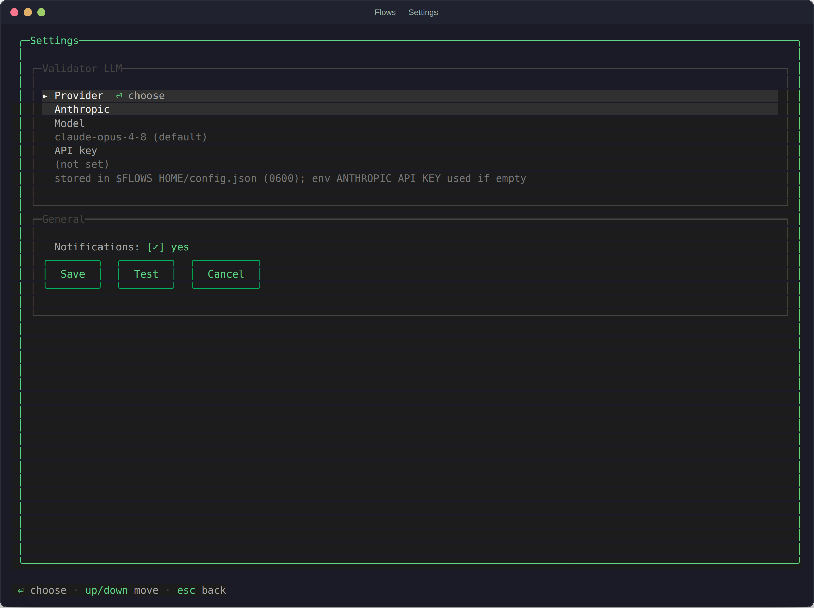

Flows
Flows is a terminal UI for orchestrating coding agents. You define a flow — a sequence of steps, each with a prompt, an agent to run it, and a desired result — and Flows runs it end-to-end, using a built-in LLM connection to check each step's output before moving on. This page walks through how it's put together and how it looks on screen. It's a reference, not a pitch.
Flows is built with OpenTUI
(@opentui/react) on Bun. It runs entirely
in your terminal: no browser, no separate server. Each agent runs as a real
interactive terminal session inside a PTY, so you can watch it work and step in
when it needs you.
Core concepts
Four ideas recur throughout the app:
- Flow — a named, reusable workflow: a description, an optional set of typed parameters, an optional default working directory, and an ordered list of steps.
- Step — one unit of work within a flow: which agent runs it, the prompt template to send, the expected result used to judge success, and behavior like retries, session continuation, and pause-for-review.
- Run — one execution of a flow with concrete parameter values. Flows keeps history for every run: status, duration, and per-step output.
- Validator — a separate, configurable LLM that reads each step's output against its expected result and decides whether the step passed, should retry, or is waiting on a question for you.

Supported agents
The first four agents run interactively: Flows launches the agent's own terminal UI inside a PTY and drives it turn by turn. Three of them expose a hook Flows can listen to for "this turn is done," so there's no fragile timeout guessing; Gemini CLI is detected by output quiescence instead.
| Agent | Invocation | Turn detection |
|---|---|---|
| Claude Code | claude <prompt> --permission-mode acceptEdits --settings <generated> |
Stop hook writes the last assistant message to a generated settings file |
| OpenCode | opencode --prompt <prompt> --auto <cwd> |
generated plugin listens for session.idle and fetches the last message via the SDK |
| Codex CLI | codex <prompt> -c notify=[…] -C <cwd> -a never -s workspace-write |
notify program receives agent-turn-complete |
| Gemini CLI | gemini (prompt typed as the first turn) |
output quiescence (~3s of silence) — a heuristic; step output may include some UI chrome |
| Custom | any shell command; the rendered prompt is exposed as $FLOW_PROMPT |
process exit (non-interactive) |
A single flow can mix agents — implement with Claude Code, review with OpenCode — each keeping its own live session. A step can also turn on Continue session to chain into the same conversation as the previous step that used the same agent and working directory, instead of starting fresh.
Building a flow
n from the flow list opens the workflow creator. A flow has a name, an
optional description, an optional default working directory (which can reference
{{params.*}}), a list of parameters, and a list of steps.

Each step opens its own editor:

Fields worth knowing about:
- Prompt — the text sent to the agent. Supports the template placeholders described in Prompt templates below.
- Expected result — what the validator checks the agent's output against. Left blank, the step still runs but nothing judges it.
- Validate output — turn validation off for steps where you don't want an LLM judging the result (formatters, linters, anything with its own pass/fail signal).
- Continue session — chain into the previous step's live conversation with the same agent, instead of starting a new one.
- Pause for review — always stop after this step so you can look before the flow continues, regardless of what the validator thinks.
- On success / On failure — jump to a specific step number instead of the default (next step, or fail the flow) — useful for simple branching.
Running a flow
⏎ on a flow prompts for its parameter values, then starts the run.

*.Once started, the run screen shows a live checklist of steps next to the agent's actual terminal, rendered through ghostty-opentui so colors, progress bars, and TTY-gated output all work the way they would in a normal terminal.

Each step's status marker means: ○ pending, running (highlighted, no
mark yet), ✓ passed, ✗ failed. After the last step
finishes, that step's agent session stays alive — you can keep attaching and talking
to it until you close it or start another run.
Attaching & answering the agent
Agents run as real interactive terminal sessions, so sometimes they ask you something mid-step — a permission prompt, a clarifying question. When that happens the run pauses in an awaiting-input state (the pane border highlights and the hint line changes):
- a — attach. Every keystroke now goes straight into the agent's own terminal UI: type an answer, drive its menus, answer its permission prompts. ctrl+] detaches again.
- f — continue the flow without answering further.
- c — cancel the run.
With validation on, the flow resumes automatically once a later turn passes validation and the validator sees no more open questions — you don't have to babysit it. While a step runs (not just when it's stuck), you can attach at any time to watch or intervene, including answering the agent CLI's own prompts. ctrl+c quits Flows everywhere except while attached, where it's sent to the agent instead.
Validation & retries
After each step, the configured validator LLM compares the agent's output against the step's expected result. Three outcomes:
- Pass — the flow moves to the next step (or the success-routing target, if set).
- Fail — the step retries, with the validator's feedback sent as a follow-up turn in the same conversation, up to the step's configured retry limit.
- Needs input — the validator detects the agent is asking a question, and the run pauses as awaiting-input.
The validator is a separate LLM connection from the coding agents themselves — see Settings for how it's configured.
Run history
h on a flow lists every run: status, parameters used, and duration.

Statuses you'll see: complete, failed, cancelled,
running / awaiting input (still live — ⏎ re-attaches),
and interrupted (Flows exited while it was running; marked as such the next
time it starts).
Prompt templates
Step prompts and working directories support two placeholder forms:
{{params.<name>}}— a flow parameter's value.{{steps.<stepName>.output}}— an earlier step's output: every assistant turn from that step (including anything it said after you answered a question), joined with---separators.
That lets later steps build directly on earlier results:
Review the changes described below and fix any issues:
{{steps.implement.output}}Settings
s from the flow list opens Settings, where the validator LLM is configured: provider (Anthropic, OpenAI, Google, or a custom OpenAI-compatible endpoint), model, and API key — without leaving the app.

Configuration resolves in this order:
- Whatever is set on this screen, stored in
$FLOWS_HOME/config.json. - An environment variable fallback for any field left blank (table below). With
nothing configured at all, the default is the Anthropic provider on
claude-opus-4-8.
| Variable | Default | Purpose |
|---|---|---|
ANTHROPIC_API_KEY / ANTHROPIC_AUTH_TOKEN | — | API key fallback, Anthropic validator |
OPENAI_API_KEY | — | API key fallback, OpenAI and custom (OpenAI-compatible) validator |
GEMINI_API_KEY / GOOGLE_API_KEY | — | API key fallback, Google validator |
FLOWS_VALIDATOR_MODEL | claude-opus-4-8 | Model fallback, Anthropic validator |
FLOWS_HOME | ~/.flows | Where flow definitions, run history, and config live |
$FLOWS_HOME/config.json in plain text, with file permissions restricted
to 0600 (owner read/write only). Leave the field blank in Settings to
rely on the environment variable instead of persisting a key to disk.
Keyboard reference
Flow list
Flow editor
Arrow keys move between fields; ⏎ edits a field or opens a section;
esc goes back. A flow's working directory supports
{{params.<name>}} and is used by every step that doesn't set its own.
Run screen
Run history
Install & run
Requires Bun and at least one coding agent CLI on your PATH.
bun install
export ANTHROPIC_API_KEY=sk-ant-... # needed for step validation (default provider)
bun run start
If you see Cannot find module 'react/jsx-dev-runtime' (or
Cannot find package 'react') referencing a
.bun/install/cache/... path, it means node_modules is
missing and Bun auto-installed @opentui/react into its global cache,
where the react peer can't be resolved. Run bun install in
the repo root, then bun run start again.
Under the hood
Flows is a single Bun/React process. The engine emits typed RunEvents
(step-start, agent-output, validation-result, step-retry, flow-complete, …) that the
run screen renders live; the UI and core share only src/types.ts.
index.tsx entry point (createCliRenderer + createRoot)
src/types.ts shared contract (Flow, FlowStep, RunEvent, ...)
src/core/
storage.ts JSON persistence in $FLOWS_HOME/flows
config.ts validator LLM config persistence + resolution
agents.ts agent registry + exec-mode command builders
session.ts PTY-backed agent sessions (bun-pty)
interactive.ts per-agent spawn + turn detection, scratch/hook files
template.ts {{...}} interpolation
validator.ts multi-provider validation + needsUserInput detection
engine.ts sequential run loop, awaiting-input gate, retries
runManager.ts in-memory registry of active runs, attach/cancel surface
runStore.ts run history persistence in $FLOWS_HOME/runs
src/ui/
App.tsx screen router + global ctrl+c/attach gating
FlowList.tsx RunScreen.tsx SettingsScreen.tsx
FlowEditor.tsx RunHistory.tsx ConfirmDelete.tsx
StepEditor.tsx RunDetail.tsx RunParamsForm.tsx
Agents run inside a real PTY (via bun-pty), so they see a proper
terminal — colors, progress rendering, and TTY-gated behavior all work as they would
outside Flows. The generated per-agent hook files that make turn detection possible
live under $FLOWS_HOME/tmp/<runId>/<agent>/ and are removed
when the run's sessions close.